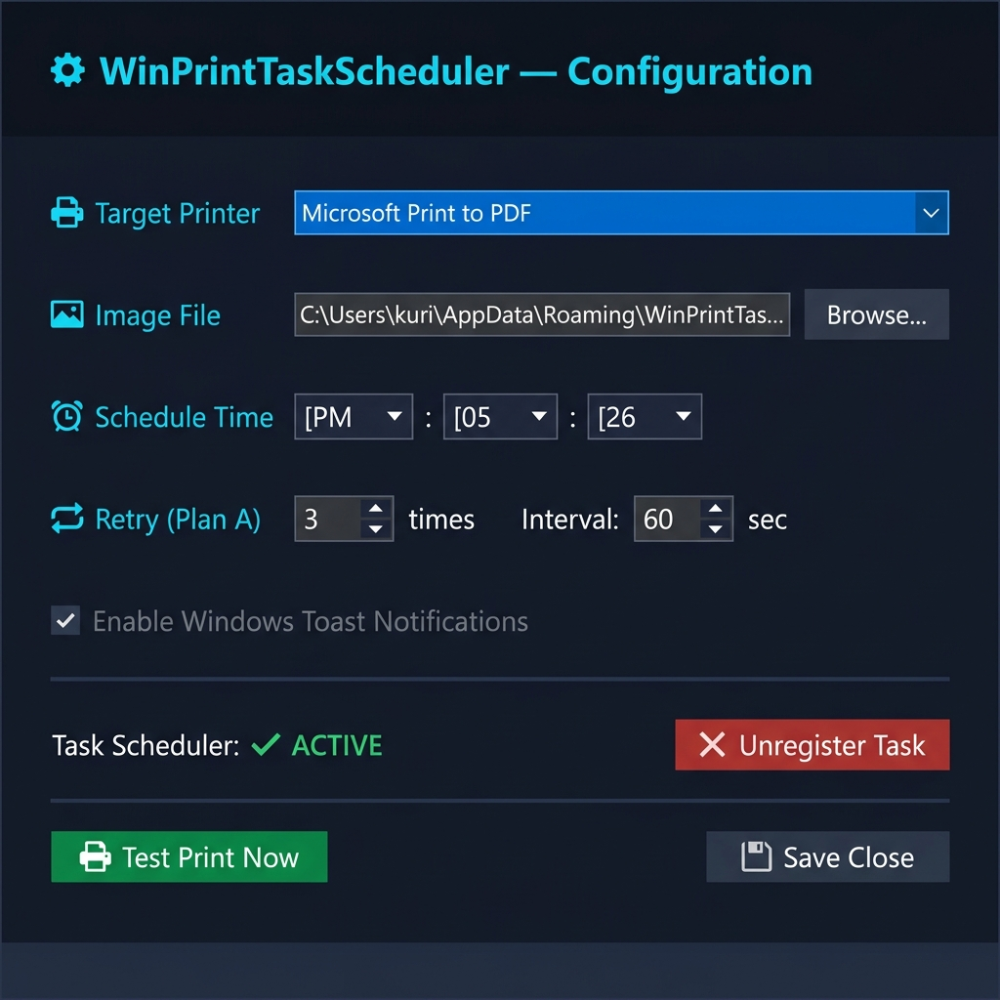

Windows 환경에서 매일 지정된 시간에 프린터로 테스트 페이지를 자동 인쇄하는
100% 무의존성 단일 .exe 파일 스케줄러입니다.
프린터 헤드 막힘 방지 및 노즐 유지보수를 완전 자동화합니다.
더블 클릭으로 열리는 환경 설정 창의 각 항목을 확인하세요.

PC에 연결된 모든 프린터 목록이 드롭다운으로 표시됩니다. 자동 인쇄를 수행할 대상 프린터를 선택하세요.
Browse 버튼으로 외부 이미지를 선택하면 %AppData%\assets로 자동 복사되어 원본이 삭제되어도 영구 사용 가능합니다.
AM/PM, 시(01~12), 분(00~59) 세 드롭다운으로 매일 자동 인쇄가 실행될 시각을 직관적으로 지정합니다.
프린터 오류 시 재시도 횟수(times)와 재시도 간격(Interval sec)을 설정합니다. 프린터가 일시적으로 오프라인이어도 자동 복구됩니다.
녹색 ✅ ACTIVE: 스케줄이 등록되어 매일 자동 인쇄 중.
빨간 ⛔ INACTIVE: 미등록 상태, Register Task 버튼으로 등록하세요.
Test Print Now: 지금 즉시 테스트 인쇄를 실행합니다.
Save & Close: 변경된 설정을 저장하고 창을 닫습니다.
Windows OS 깊은 연동으로 제작된 실용적인 자동화 도구입니다.
파이썬, .NET SDK, 외부 패키지 설치가 전혀 필요 없는 1개 단일 .exe 파일입니다. 어떤 PC에서도 복사만 하면 즉시 동작합니다.
작업 스케줄러 실행 시 콘솔 창이나 팝업 다이얼로그가 단 0.001초도 뜨지 않고 100% 백그라운드로 조용히 실행됩니다.
모든 설정, 이력, 이미지를 Windows 표준 %AppData%\WinPrintTaskScheduler 공간에서 안전 관리하여 권한 오류 0%입니다.
임시 폴더에서 실행해도 스케줄 등록 시 스스로 영구 공간으로 복제되어, 원본 파일을 삭제해도 365일 안전하게 작동합니다.
[AM/PM], [시], [분] 드롭다운으로 스케줄 시각을 손쉽게 설정합니다.
인쇄 성공 및 실패 시 Windows 10/11 알림 센터를 통해 결과를 즉시 알려줍니다.
4단계로 끝나는 간단한 설치 및 스케줄 등록
위의 버튼을 클릭하여 WinPrintTaskScheduler.exe를 다운받습니다.
어느 폴더에서든 더블 클릭하면 환경 설정 GUI 창이 열립니다.
프린터 드롭다운에서 대상 프린터를 선택하고, AM/PM 시/분을 지정합니다.
스케줄 등록 즉시 매일 지정 시각에 자동 인쇄가 시작됩니다.